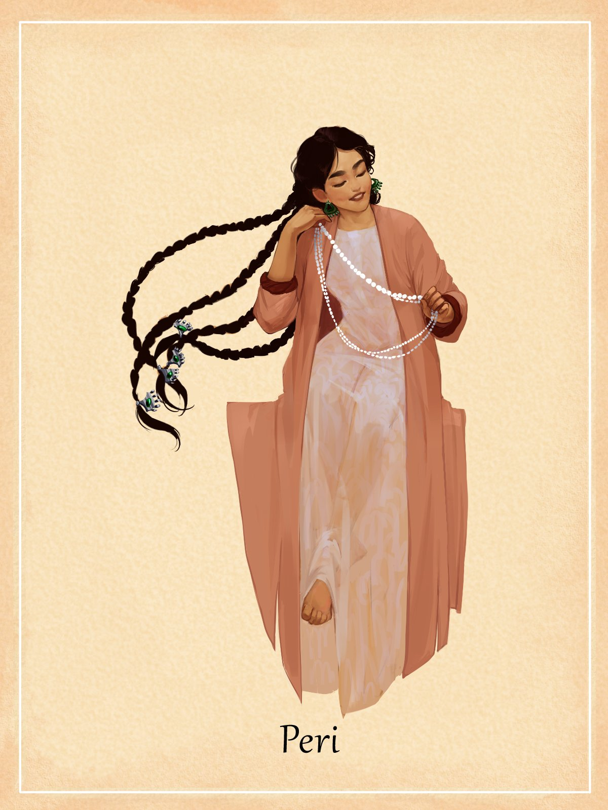

Mythology
Peri
Peri are endowed with different qualities. If in many Turkic-speaking and Iranian-speaking peoples they are perceived as evil spirits, then among the Kazakhs these creatures are considered representatives of a special people. Peri are divided into Muslim and Kapiri. There are also water peris - Su peris.
Please, login to continue the reading.
Login now!
